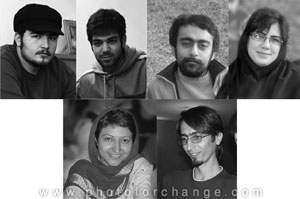

|
|
آخرین خبر از وضعیت بازداشتی ها و کمپینی های دربازداشت مراسم روز کارگر
شنبه12 اردیبهشت 1388
تغییر برای برابری - طبق آخرین اخبار رسیده زنان بازداشتی روز جهانی کارگر همچنان در وزرا به سر می برند و مردان را نیز به اوین، کلانتری سنایی و چند کلانتری دیگر منتقل کرده اند. خانواده ها نیز از صبح امروز بی آنکه پاسخی بگیرند در راه بازداشتگاه وزرا، دادگاه انقلاب و کلانتری ها سرگردانند. براساس آخرین اطلاعات مریم حاج محسن، پروانه قاسمیان، فاطمه شاه نظری، شریفه، محمد فرجی، بهروز خباز، جعفر عظیم زاده، زانیار احمدی، محمد اشرفی، علی رضا تقفی ، محسن تقفی ، سعید مقدم وسعید یوزی جزو بازداشت شدگان هستند.

آخرین خبر از وضعیت فعالان بازداشتی کمپین
در مراسم بزرگداشت روز جهانی کارگر با اطلاعی که تاکنون در دست هست، نیکزاد زنگنه، امیریعقوبعلی، کاوه مظفری ، پوریاپوشتاره وطاها ولی زاده بازداشت شده اند. در حالی که خانواده ها پیگیر وضعیت فرزندان بازداشت شده خود بودند ماموران به منزل برخی از بازداشتی ها از جمله کاوه مظفری و امیریعقوبعلی رفتند. آنها پس از بازرسی کامل منزل و ضبط کامپیوتر و کتاب و ونوشته های آنها، جلوه جواهری همسر کاوه مظفری را نیزبازداشت کردند. این اقدام در حالی صورت گرفت که جلوه خانه نبود اما با مراجعه وی به منزل ماموران اجازه ی خارج شدن او از منزل را نداده وبدون داشتن حکم بازداشت او را نیز با خود برده و به وزرا منتقل کردند. مادر جلوه جواهری که هم اکنون در کنار بسیاری از مادران دیگر و مادران کمپینی جنب بازداشتگاه وزرا منتظر ایستاده است می گوید: من خودم کلید داشتم وارد خانه شدم دیدم همه وسایل را جمع می کنندو چندتا ساک چیده اند کنار اتاق.هر چه بود حتی یک کاغذ را هم با خود بردند، مدارک دانشگاه آنها را هم باخودشان بردند. بعد به جلوه گفتند شما هم باید با ما بیایید وبه چند سوال جواب دهید. اما جلوه گفت شما که حکم بازداشت مرا ندارید نمی آیم. آنها هم زنگ زدند و سه مرد گنده آمدند وجلوه را با زور با خودشان بردند. به دست کاوه هم دستبند زده بودند. من دیگر آنقدر عصبانی شده بودم که به آنها گفتم شما به دست آزادی دستبند می زنید.»
بعد از حمله خشونت بار پلیس به تجمع مسالمت آمیز کارگران کمپین بین المللی حقوق بشر در ایران با صدور اطلاعیه ای آزادی سریع بازداشت شدگان راخواستارشد. همچنین کمیته برگزاری مراسم اول ماه مه 88با صدور اطلاعیه شماره یک خود ضمن محکوم کردن این اقدام غیر انسانی خواستار آزادی بی قید و شرط تمامی دستگیر شدگان شد. جمعی از کارگران ایرانخودرو نیز با اعلام این که برگزاری مراسم روز جهانی کارگر را حق مسلم و بی چون و چرای کارگران می دانیم، سرکوب و دستگیری فعالان کارگری را محکوم کرد و خواهان آزادی بی قید و شرط تمامی دستگیرشدگان شد.
مرتبط
ادامه خشونت در روز کارگر؛ بازداشت جلوه جواهری و تفتیش شبانه ی منزل برخی از اعضای کمپین
گردهمایی روز جهانی کارگر به خشونت کشیده شد: بازداشت حدود 150 نفر از مردم و فعالان کارگری و اجتماعی